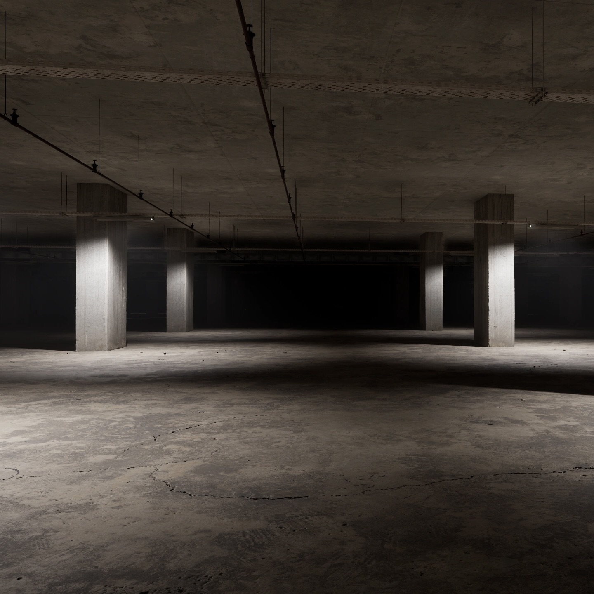

壁と床がコンクリートで出来た駐車場のような空間。
どこからか霧が低く立ち込め、床に水溜りを形成している。
構造は多様で広大。物資が入った箱がランダムに生成される。
照明が不安定で、時には消えることもある。
霧や水は純粋であり、緊急時は水溜りで水分補給が可能。
光が消えた際、影のような生物に襲われることがある。
常に光源を携帯しておくべきだろう。
貴方の大切なものを失いたくなければ常に身につけておくことをお勧めする。
理解度:90%
危険度:1/5